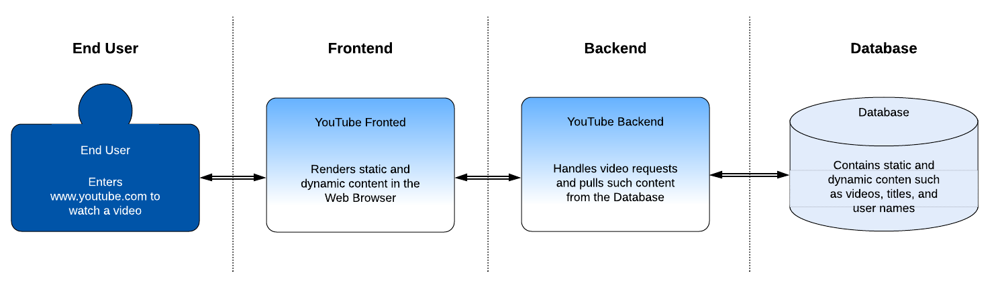
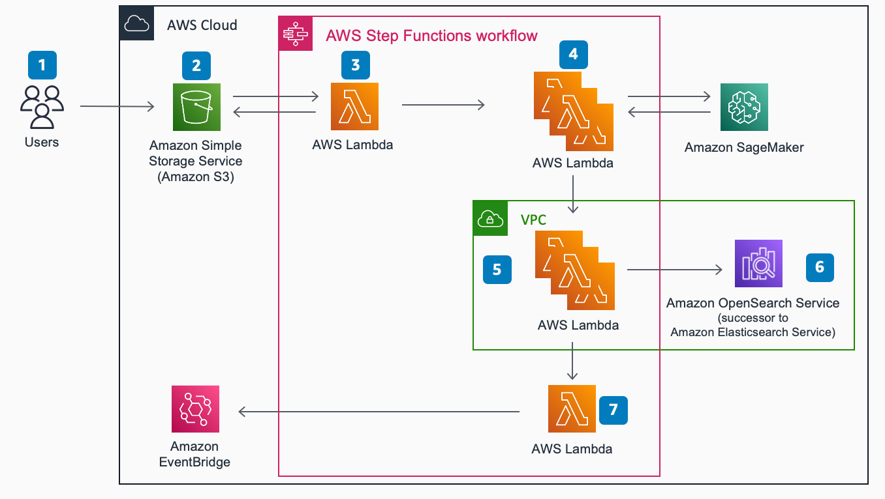

Activity - Documenting a Software Architecture
Complete the missing descriptions (text in blue) of the Documenting a Software Architecture document using the architecture displayed below. Focus on the Overview, End User, Frontend, and Database sections.
Time 20 min.
Overview
This guide provides a high-level description of the Youtube software architecture. The description explains how the architecture works and the elements, properties, and relationships that it contains.
The YouTube application is a cloud-based platform that includes the following main components:
This structure facilitates the data flow from the database to the end user and back. In the next section you can find detailed information about how these elements interact.
Diagram
The following diagram illustrates the high-level architecture of the YouTube application:

Figure 1. High-Level Architecture of the YouTube Application
The Youtube architecture comprises the following elements, properties, and relationships:
End User {#id1}
In the Youtube application, the User comprises the following properties and relationships:
- Properties: Enters www.youtube.com to watch a video.
- Relationships: It has a bidirectional relationship with the Frontend. The user sends a request and receives content through the Web Browser. \
Frontend
In the youtube application, comprises the following properties and relationships:
- Properties: It renders static and dynamic content in the Web Browser
- Relationships: It has bidirectional relationships with the End User and with the Backend. With the End User, the Frontend receives requests of a specific video and sends dynamic and static content as a response. With the Backend, the Frontend sends video requests and receives dynamic and static content as a response to display at the Web Browser. \
Backend
In the Youtube application, the Backend comprises the following properties and relationships:
- Properties: It handles video requests and pulls such content from the Database.
- Relationships: It has bidirectional relationships with the Frontend and with the Database. With the Frontend, the Backend receives requests and sends dynamic and static content as a response. With the Database, the Backend sends requests and receives dynamic and static content as a response.
Database
In the Youtube application, the Database comprises the following properties and relationships:
- Properties: It contains static and dynamic content such as videos, titles, and user names.
- Relationships: It has a bidirectional relationship with the Backend. With the Backend, the Database receives video requests, and sends back the dynamic and static content.
Plagiarism Detection Architecture Diagram

Users
In the Plagiarism Detection Architecture Diagram, the Users have the following properties and relationships:
- Properties: Send the documents to detect plagiarism.
- Relationship: The Users send documents toAmazon Simple Storage Service (Amazon S3) to run plagiarism detection on them.
AWS Cloud
In the Plagiarism Detection Architecture Diagram, the AWS Cloud comprises the following elements, properties, and relationships:
- Amazon S3: Cloud storage to place the documents that the user sent.
- Properties: Amazon S3 event triggers start of AWS Step Functions workflow.
- Relationship: It has a one direction relationship with the user, and a bidirectional relationship with the AWS Lambda.
- Amazon EventBridge: Communicates the results of the plagiarism detection to the Users.
- Properties: Based on the configured similarity threshold that is compared against the OpenSearch Service query result score, an event bridge event is raised, specifying source document information that has possibly been plagiarized with reference to relevant works.
- Relationship: It has a directional relationship with the last AWS Lambda executed.
AWS steps functions workflow
In the Plagiarism Detection Architecture Diagram, the AWS steps Functions Workflow comprises the following properties and relationships:
AWS Lambda
- Properties: AWS Lambda function extracts text from document using Tika (a content analysis toolkit that detects and extracts metadata and text from over a thousand different file types.
- Relationship: It has a bidirectional relationship with Amazon S3 and Amazon SageMaker, and a directional relationship to others AWS Lambda through the procedure.
VCP
In the Plagiarism Detection Architecture Diagram, the VCP comprises the following properties and relationships:
Amazon OpenSearch Service
- Properties: Amazon OpenSearch Service (OpenSearch Service) domain stores an index of pre-processed works that have been converted into word embedding vectors and indexed.
- Relationship: It has a directional relationship that came from one of the AWS Lambda functions.